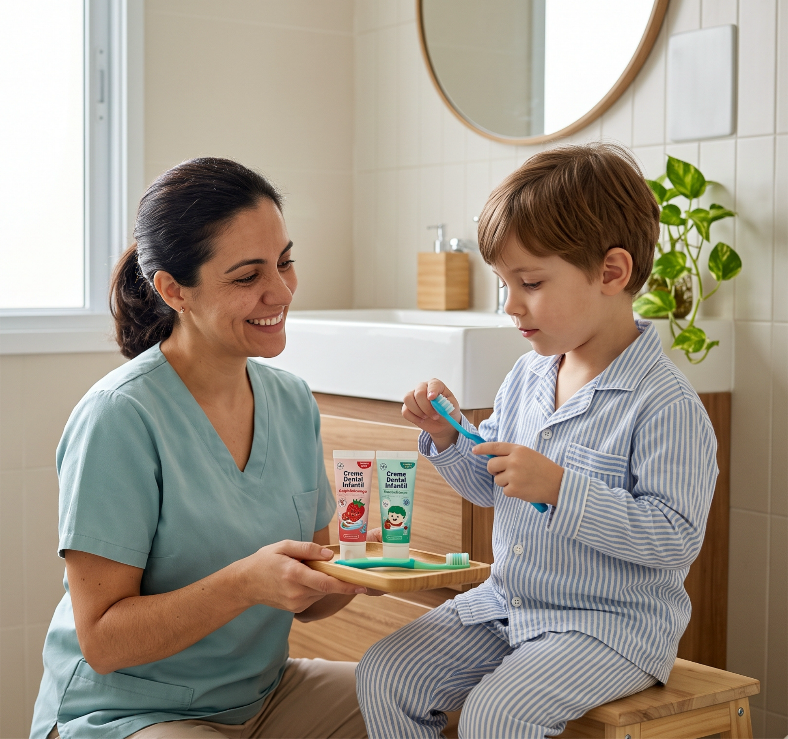

Após utilizar todas as sequências visuais e realizar a escovação, é importante que você utilize um reforço positivo para estimular e incentivar.
Todas essas ações devem ser repetidas várias vezes e com paciência para que as pessoas consigam entender e realizar a higiene bucal corretamente. Não se preocupe se seu filho chorar, isso faz parte do processo, o importante é não desistir e fazer esse treinamento diário.
Caso não seja possível realizar a escovação no banheiro, você pode:
Se a pessoa for mais relutante à higiene, você pode seguir um passo por dia, e não precisa necessariamente fazer todos os passos, todos os dias. Cada etapa que você conseguir cumprir, já será um passo importante para se tornar uma rotina.
